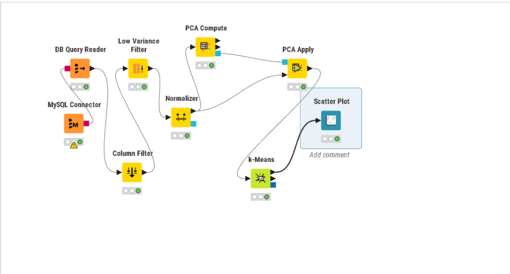
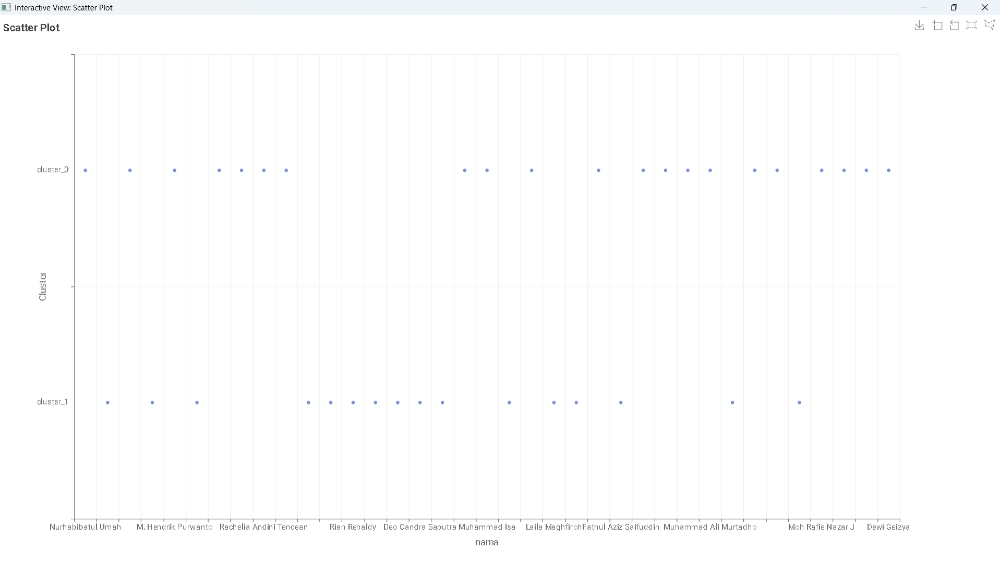

---
jupytext:
text_representation:
extension: .md
format_name: myst
format_version: 0.13
---
# 7. Ekstraksi Fitur TSFEL, Reduksi PCA, & K-Means Clustering
Dokumen ini menjelaskan alur lengkap pengolahan data polutan udara (**CO, $NO_2$, dan $SO_2$**) wilayah **Surabaya Selatan** (rentang waktu 31 Agustus 2025 s.d. 31 Agustus 2026), mulai dari eksplorasi deret waktu, ekstraksi 68 fitur TSFEL per polutan (total 204 kolom), reduksi dimensi menggunakan PCA, hingga analisis *K-Means Clustering* dan integrasi database Aiven Cloud.
---
## 1. Eksplorasi Data & Time Series Plot (Semua Polutan)
Sebelum melakukan ekstraksi fitur, kita melakukan visualisasi deret waktu (*time series plot*) untuk melihat tren harian dan karakteristik fluktuasi dari ketiga polutan secara bersamaan.
```{code-cell} ipython3
:tags: [hide-input]
import pandas as pd
import numpy as np
import matplotlib.pyplot as plt
from sklearn.ensemble import IsolationForest
pollutants = ['CO', 'NO2', 'SO2']
CONTAMINATION = 0.05
for pol in pollutants:
try:
# 1. Load data
df = pd.read_csv(f"data/processed/data_polutan_{pol.lower()}_clean.csv")
df['date'] = pd.to_datetime(df['date'])
df = df.sort_values('date').reset_index(drop=True)
# Parse data numerik
def parse_val(v):
if pd.isna(v) or v is None: return np.nan
s = str(v).replace('[', '').replace(']', '').strip()
return float(s) if s.lower() not in ['none', 'nan', ''] else np.nan
df[pol] = df[pol].apply(parse_val)
df = df.dropna(subset=[pol]).copy()
# 2. Deteksi Outlier dengan Isolation Forest
model = IsolationForest(contamination=CONTAMINATION, random_state=42)
df['anomaly'] = model.fit_predict(df[[pol]]) # -1 = outlier, 1 = normal
# 3. Ganti Outlier jadi NaN lalu Interpolasi Berbasis Waktu
df_fixed = df.copy()
df_fixed.loc[df_fixed['anomaly'] == -1, pol] = np.nan
df_fixed[pol] = df_fixed[pol].interpolate(method='linear').ffill().bfill()
# 4. Visualisasi Plot
plt.figure(figsize=(15, 4))
plt.plot(df_fixed['date'], df_fixed[pol], color='green', linewidth=1,
label=f'{pol} (setelah outlier diganti & diinterpolasi)')
plt.title(f'{pol}')
plt.legend(loc='upper right')
plt.grid(True, linestyle='--', alpha=0.5)
plt.tight_layout()
plt.show()
except Exception as e:
print(f"Gagal memproses visualisasi polutan {pol}: {e}")
## 2. Konsep Dasar, Deskripsi Fitur & Perhitungan Manual Khusus (`wavelet_std` & `wavelet_var`)
Berdasarkan pembagian tugas kelas, fitur utama yang dianalisis secara mendalam oleh **Muhammad izzul Millah Aqil** adalah dua fitur berbasis dekomposisi wavelet: **`wavelet_std`** dan **`wavelet_var`**.
---
### 2.1 Deskripsi Fitur Khusus
Dekomposisi Wavelet (*Discrete Wavelet Transform / DWT*) memecah sinyal deret waktu $X(t)$ menjadi dua komponen utama:
1. **Koefisien Aproksimasi ($cA$):** Menggambarkan tren frekuensi rendah (pola jangka panjang) dari sinyal polutan.
2. **Koefisien Detail ($cD$):** Menggambarkan fluktuasi cepat, derau (*noise*), dan perubahan frekuensi tinggi dari sinyal polutan.
Fungsi ekstraksi fitur TSFEL mengekstrak statistik dispersi langsung dari **Koefisien Detail ($cD$)** sinyal:
* **`wavelet_std` (Standar Deviasi Wavelet):** Mengukur tingkat sebaran atau simpangan baku dari fluktuasi frekuensi tinggi sinyal polutan. Nilai yang besar menunjukkan adanya perubahan konsentrasi harian yang sangat drastis atau tidak stabil.
* **`wavelet_var` (Variansi Wavelet):** Kuadrat dari `wavelet_std`, yang mengukur besarnya total variansi daya fluktuasi frekuensi tinggi sinyal polutan.
---
### 2.2 Formulasi Matematika
Misalkan dari hasil dekomposisi wavelet diperoleh $N$ buah koefisien detail $cD = [cD_1, cD_2, \dots, cD_N]$ dengan rata-rata $\mu_{cD}$:
$$\mu_{cD} = \frac{1}{N} \sum_{i=1}^{N} cD_i$$
1. **Rumus Variansi Wavelet (`wavelet_var`):**
$$\text{wavelet\_var} = \frac{1}{N} \sum_{i=1}^{N} (cD_i - \mu_{cD})^2$$
2. **Rumus Standar Deviasi Wavelet (`wavelet_std`):**
$$\text{wavelet\_std} = \sqrt{\text{wavelet\_var}} = \sqrt{\frac{1}{N} \sum_{i=1}^{N} (cD_i - \mu_{cD})^2}$$
---
### 2.3 Perhitungan Manual (Studi Kasus: Polutan $\text{NO}_2$)
Untuk memahami cara kerja algoritma, dilakukan simulasi perhitungan manual menggunakan sampel mini sinyal konsentrasi **$\text{NO}_2$** ($N = 4$ hari sampel) dalam satuan $\text{ppm}$:
$$\text{Sinyal }\text{NO}_2 = X = [20 \times 10^{-6},\; 50 \times 10^{-6},\; 30 \times 10^{-6},\; 40 \times 10^{-6}]$$
#### Langkah 1: Dekomposisi Wavelet Haar (Mencari Koefisien Detail $cD$)
Menggunakan filter *Mother Wavelet Haar* ($\text{filter} = [\frac{1}{\sqrt{2}}, -\frac{1}{\sqrt{2}}]$ di mana $\frac{1}{\sqrt{2}} \approx 0.70710678$):
$$cD_1 = \frac{x_1 - x_2}{\sqrt{2}} = \frac{20 \times 10^{-6} - 50 \times 10^{-6}}{\sqrt{2}} = \frac{-30 \times 10^{-6}}{1.41421356} \approx -2.12132034 \times 10^{-5}$$
$$cD_2 = \frac{x_3 - x_4}{\sqrt{2}} = \frac{30 \times 10^{-6} - 40 \times 10^{-6}}{\sqrt{2}} = \frac{-10 \times 10^{-6}}{1.41421356} \approx -0.70710678 \times 10^{-5}$$
Sehingga didapatkan array Koefisien Detail:
$$cD = [-2.12132034 \times 10^{-5},\; -0.70710678 \times 10^{-5}]$$
---
#### Langkah 2: Hitung Rata-rata Koefisien Detail ($\mu_{cD}$)
$$\mu_{cD} = \frac{cD_1 + cD_2}{2} = \frac{(-2.12132034 \times 10^{-5}) + (-0.70710678 \times 10^{-5})}{2} = -1.41421356 \times 10^{-5}$$
---
#### Langkah 3: Hitung Variansi Wavelet (`wavelet_var`)
$$\text{Deviasi}_1 = cD_1 - \mu_{cD} = (-2.12132034 \times 10^{-5}) - (-1.41421356 \times 10^{-5}) = -0.70710678 \times 10^{-5}$$
$$\text{Deviasi}_2 = cD_2 - \mu_{cD} = (-0.70710678 \times 10^{-5}) - (-1.41421356 \times 10^{-5}) = 0.70710678 \times 10^{-5}$$
$$\text{Kuadrat Deviasi}_1 = (-0.70710678 \times 10^{-5})^2 = 5 \times 10^{-11}$$
$$\text{Kuadrat Deviasi}_2 = (0.70710678 \times 10^{-5})^2 = 5 \times 10^{-11}$$
$$\text{wavelet\_var} = \frac{\text{Kuadrat Deviasi}_1 + \text{Kuadrat Deviasi}_2}{2} = \frac{5 \times 10^{-11} + 5 \times 10^{-11}}{2} = \mathbf{5.000000 \times 10^{-11}}$$
---
#### Langkah 4: Hitung Standar Deviasi Wavelet (`wavelet_std`)
$$\text{wavelet\_std} = \sqrt{\text{wavelet\_var}} = \sqrt{5.000000 \times 10^{-11}} = \mathbf{7.071068 \times 10^{-6}}$$
---
### 2.4 Pembuktian Kode Python (Manual vs PyWavelets vs TSFEL)
Berikut skrip Python untuk membuktikan bahwa perhitungan manual di atas identik dengan output dari pustaka `PyWavelets` dan `TSFEL`:
```{code-cell} ipython3
import numpy as np
import pywt
import tsfel.feature_extraction.features as tsfel_features
# Sampel Sinyal NO2 Mini
x_no2_sample = np.array([20e-6, 50e-6, 30e-6, 40e-6])
# 1. Dekomposisi Wavelet Haar
cA, cD = pywt.dwt(x_no2_sample, 'haar')
# 2. Perhitungan Manual via NumPy
manual_var = np.var(cD)
manual_std = np.std(cD)
# 3. Perhitungan Menggunakan Pustaka TSFEL
tsfel_var = tsfel_features.wavelet_var(x_no2_sample)
tsfel_std = tsfel_features.wavelet_std(x_no2_sample)
print("=== PEMBUKTIAN FITUR WAVELET POLUTAN NO2 ===")
print(f"Hasil Manual (NumPy) -> wavelet_var: {manual_var:.8e} | wavelet_std: {manual_std:.8e}")
print(f"Hasil Pustaka TSFEL -> wavelet_var: {tsfel_var:.8e} | wavelet_std: {tsfel_std:.8e}")
3. Implementasi Workflow pada KNIME Analytics Platform#
Pengolahan data fitur hasil TSFEL dilakukan secara otomatis menggunakan perangkat lunak KNIME Analytics Platform dengan tahapan penyiapan node workflow sebagai berikut:
3.1 Koneksi Database & Penarikan Data#
Node
MySQL Connector/DB Connector: Digunakan untuk menyambungkan KNIME ke server database MySQL/MariaDB (basisdata2-c.my.id:3306) dengan basis databasisda1_PSD-A.Node
DB Query Reader: Mengeksekusi perintah kueri SQL berikut tanpa tanda titik koma (;) di akhir kueri untuk mengambil seluruh fitur TSFEL:SELECT * FROM `basisda1_PSD-A`.ekstraksi_fitur_co
3.2 Preprocessing Data (Filtering, Variance Control, & Normalisasi)#
Node
Column Filter:Memisahkan variabel numerik dan metadata non-numerik.
Excludes:
id,nama,daerahIncludes: Seluruh kolom fitur angka TSFEL.
Node
Low Variance Filter:Berfungsi untuk mengeliminasi kolom-kolom yang bersifat konstan (memiliki variansi mendekati
0), sehingga algoritma PCA tidak mengalami pembagian dengan nol.
Node
Normalizer:Menerapkan pembobotan variabel dengan metode Min-Max Normalization (rentang 0.0 s.d. 1.0) agar fitur berjarak variabel seimbang.
3.3 Reduksi Dimensi dengan PCA#
Node
PCA Compute:Menerima input fitur yang telah dinormalisasi dari node
Normalizer.Pada konfigurasi panel Dimensions, tentukan jumlah komponen utama yang ingin dihasilkan (misalnya
Fixed Number = 2atau37).
Node
PCA Apply:Menerima port data numerik dari
Normalizerdan port matriks transformasi dariPCA Compute.Mengubah fitur-fitur berdimensi tinggi menjadi komponen proyeksi baru (
PCA dimension 0,PCA dimension 1, dst.).
3.4 Pemodelan K-Means Clustering#
Node
k-Means:Hubungkan output data dari node
PCA Applymenuju port inputk-Means.Konfigurasikan Number of clusters (\(k\)) menjadi
2atau3.Tentukan Max. number of iterations =
100.Eksekusi node hingga menyala hijau untuk mengekstrak penataan kelompok baru bernama kolom
Cluster.
3.5 Visualisasi Cluster & Penetapan Sumbu#
Node
Scatter Plot:Hubungkan output data berlabel dari node
k-Meanske portScatter Plot.Buka konfigurasi panel visualisasi:
Horizontal dimension:
namaVertical dimension:
clusterColor dimension:
none
Jalankan perintah Apply and Execute untuk menyajikan grafik sebaran titik cluster berbasis warna.
Rangkaian Workflow & Hasil Clustering#
Berikut adalah gambaran alur workflow KNIME yang telah disusun serta hasil sebaran titik kelompok data (clustering):

Gambar 3.1: Alur Lengkap Workflow Preprocessing, PCA, dan K-Means pada KNIME
Gambar 3.2: Hasil Persebaran Cluster (cluster_0 dan cluster_1) Menggunakan Scatter Plot